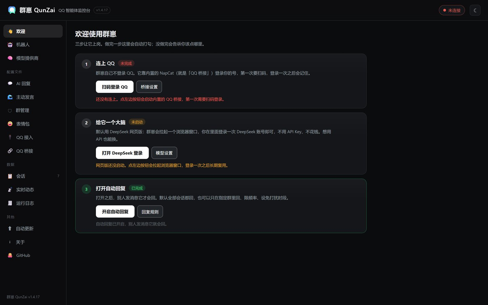
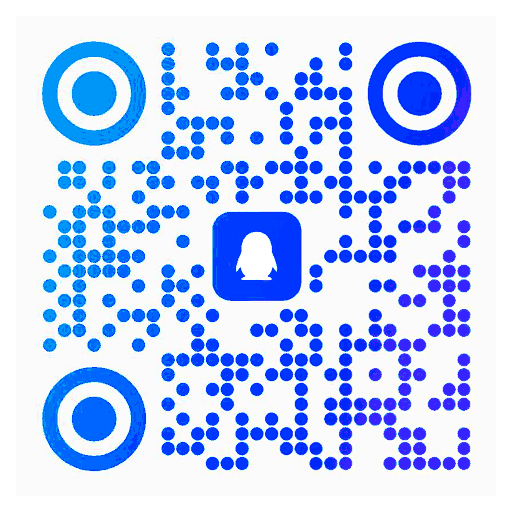

住进 QQ 群的 AI 搭子 · 免费开源
让群热闹，
也把群管好
群崽通过 OneBot 11 接入你的 QQ，用网页版大模型当大脑。它干两件事：把群盘活（接梗、斗图、自己发表情包），也把群管好（@ 才回、关键词、指定会话、免打扰、主人远程指令）。内置网页监控台，连接状态、回复记录、表情包素材全部可视化。

WHAT IT DOES
一个搭子，两件事
盘活和管理不是二选一。接得住梗，也守得住边界。
GET STARTED
三步，就能开工
不用自己装 Node.js，不用另外下载 NapCat，登录态覆盖安装也不丢。
BUILT DIFFERENT
不是反代，不是中转，就是「像人一样点网页」
群崽用 Node 连接本机浏览器调试端口（CDP），在页面里执行 JS 模拟输入与发送，驱动网页版大模型。不需要任何 API Key，不产生任何 API 账单；也不是逆向 DeepSeek 网页、没有第三方中转。
群崽自身零 npm 依赖（Node ≥ 22 内置能力就够），随包附带 Node 运行时与 NapCat 监视器。聊天记录、表情包库、浏览器登录态、日志全部只在本机 data 目录，无任何遥测与联网上传。
- 表情包引擎：来信表情自动留本地副本，回复里写 [表情] 就自动发，多个表情打包成一条消息
- 长期记忆：人设 / 近况 / 群梗 / 偏好 / 关系五类，记进 data/memory.json 并检索进提示词
- 看图回复、免打扰时段、QQ 里发 /状态 /暂停 /帮助 远程管理
TECH STACK
小而干净的一套东西
OneBot 11任意实现都能接：内置 NapCat，也支持 SnowLuma / LLOneBot。
D:群崽data所有数据只在这一个目录，覆盖安装不丢，删掉即彻底清空。
MIT 协议随便 fork、随便改；软件免费开源，所有功能都不会锁进付费档。
IN THE WILD
界面实拍
连接状态、回复记录、表情包素材，都摆在你看得见的地方。
COMMUNITY
进群来聊
用着有问题、想提点子、想看看别人怎么调教它——都在这个群里。群崽自己也在群里，可以直接问它。
群号1128593359
手机 QQ 扫码直接进 · 无密码 · 不发电也能进

群崽 QunZai 交流群